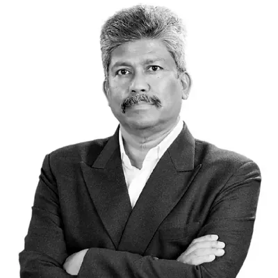

G. Udayan Dravid
Director 40+ years
A business leader with more than 40 years across healthcare, retail, telecom and manufacturing, known for building strong teams and leading organisational change. He is also the founder of ConnectHub, a strategic consulting firm whose clients include Apple and Google.